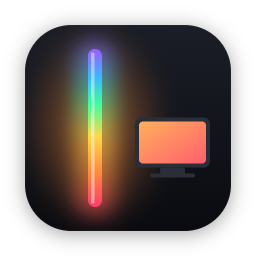
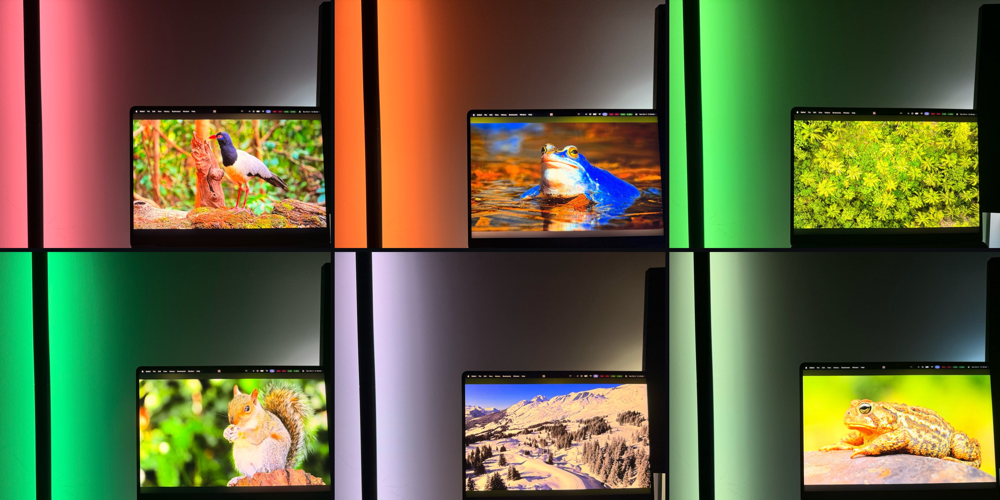
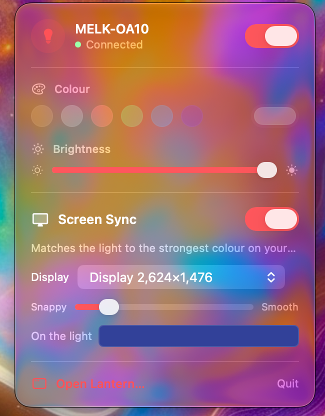
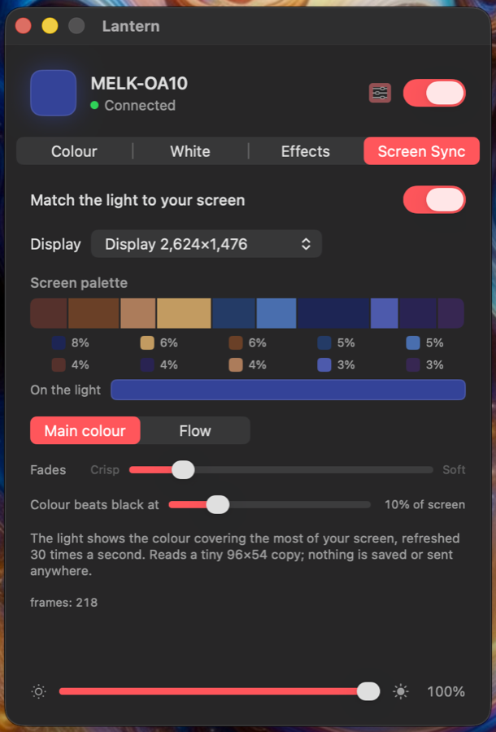
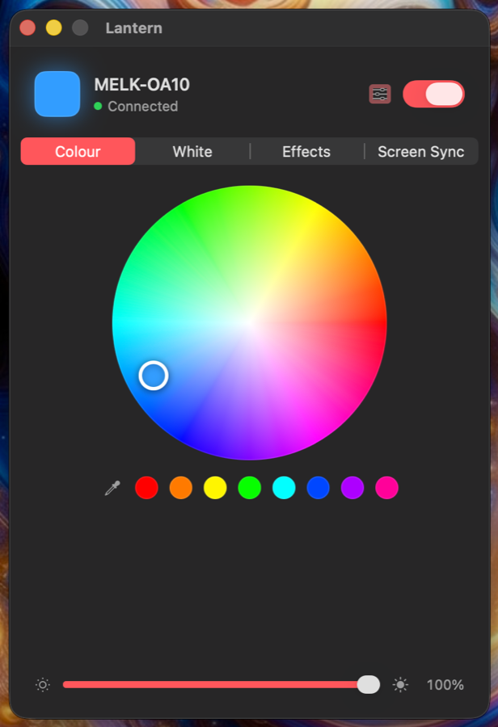
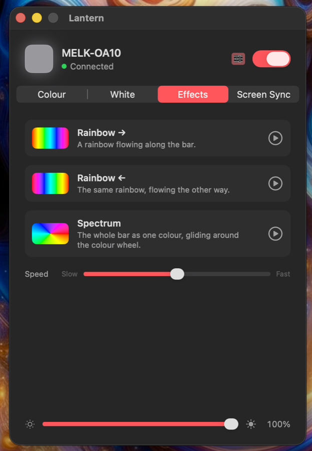

A Mac menu bar app for Bluetooth LED bars. Match the light to your screen, pick any colour, set a white, or run an effect: straight over Bluetooth, no hub, no account.

Have you ever bought an inexpensive LED bar, set it up behind your desk, and wished it could follow your screen the way a Philips Hue setup does?
I wanted that feature without paying for the whole Hue ecosystem. Screen sync with Hue needs Hue lights, a Hue Bridge and the Hue Sync app, which comes to about A$550 in Australia. Instead, I bought the cheapest Bluetooth light bar I could find, for A$49, and decided to solve the problem myself.
The bar came with a phone app and a remote, but it had no way to talk to my Mac. I worked out the commands it understands over Bluetooth and wrote the missing piece. Lantern runs in the Mac menu bar and controls the light directly, so there is no hub, no account and no cloud service involved. The result is the expensive feature, running on a light that cost A$49.
| Hue screen sync | This setup | |
|---|---|---|
| Light | Hue Play gradient light tube, A$419.95 | MELK LED bar, A$49 |
| Hub | Hue Bridge, A$129.95 | none |
| Software | Hue Sync | Lantern, free |
| Total | ≈ A$550 | A$49 |
Lantern reads a tiny copy of your display 30 times a second and sends the colour covering the most of it to the light over Bluetooth. Change what's on screen, and the room changes with it.
Sets the light to the colour covering the most of your screen, 30 times a second. A dark scene dims the bar; a strong colour still beats black. Or let it flow through the screen's top ten colours.
A colour wheel, quick swatches, and an eyedropper that grabs any pixel on any screen.
A warmth scale from 2700K to 6500K with presets, plus a tint control to match a real bulb.
The bar's own flowing rainbow in either direction, and Spectrum: the whole bar gliding around the colour wheel.
Screen colours look pastel on LEDs. Compare any colour with the bar and tune saturation, gamma and colour balance until they match.
Screen frames are 96×54 pixels, reduced to a few colours in memory and discarded. Nothing is saved or leaves your Mac.
Lantern is built with SwiftUI and follows the macOS design language. The menu bar panel uses the system's translucent glass material, so it picks up the colours of whatever sits behind it, and the whole app follows your accent colour and dark mode.




Bluetooth lights that advertise as MELK-… or ELK-…: the inexpensive LED bars and strips sold with the Magic Lantern and Lotus Lantern style apps. Tested on a MELK-OA10 bar. They all take the same 9-byte commands on service FFF0, characteristic FFF3:
| Command | Bytes |
|---|---|
| Colour | 7E 07 05 03 RR GG BB 10 EF |
| Brightness (0–100) | 7E 04 01 BB FF FF FF 00 EF |
| Power on / off | 7E 04 04 01 FF FF FF 00 EF / 7E 04 04 00 00 00 FF 00 EF |
| Built-in effect | 7E 00 03 CC 03 00 00 00 EF (MELK-OA10: 01 rainbow, 02 reversed) |
| Effect speed (0–100) | 7E 00 02 SS 00 00 00 00 EF |